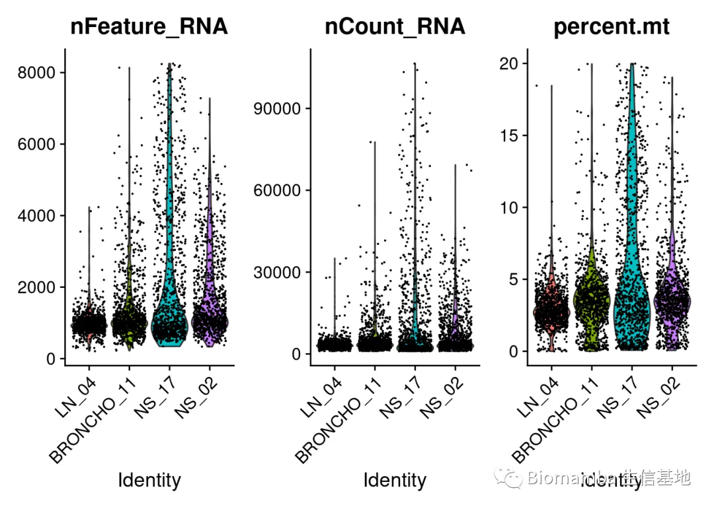
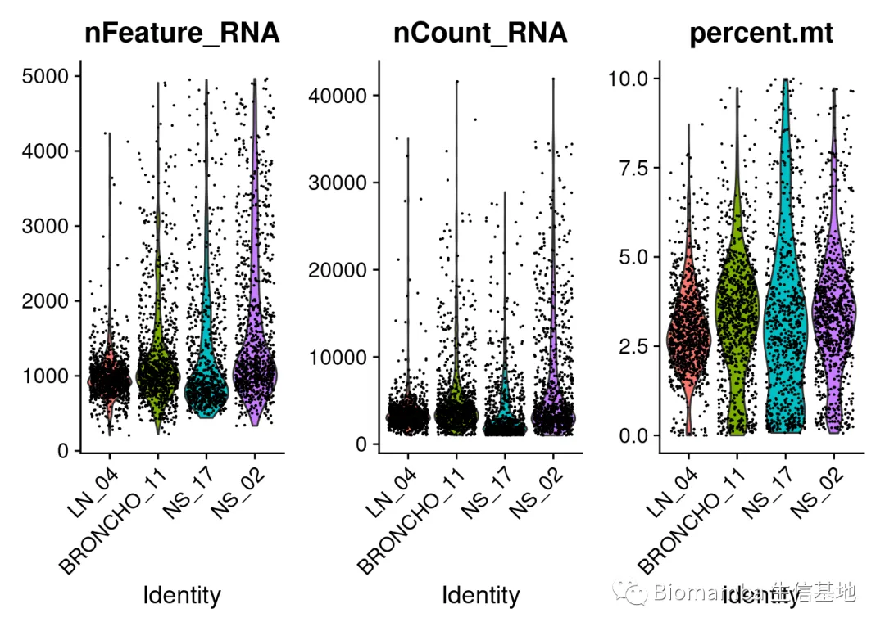
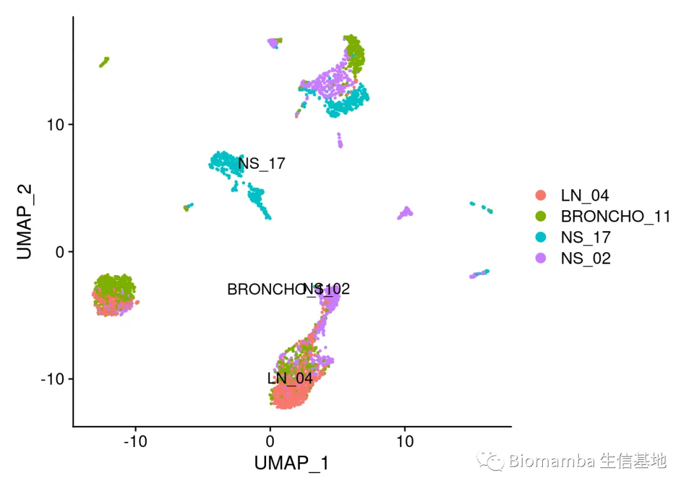
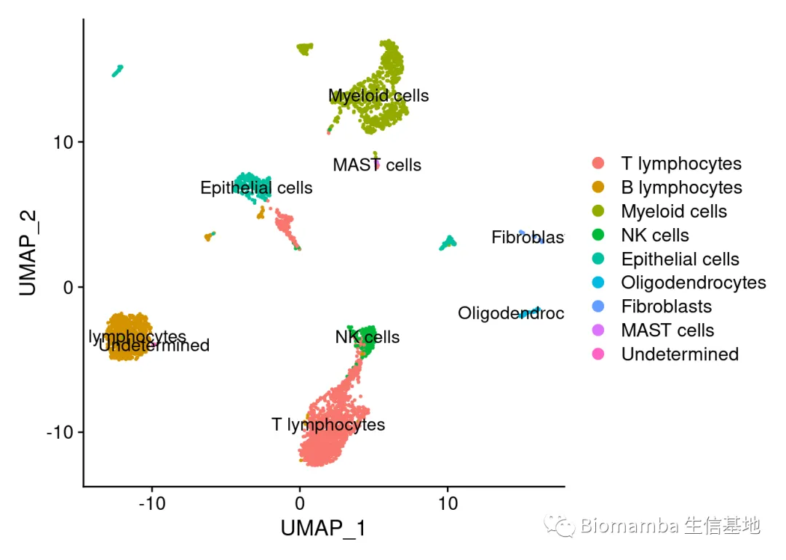
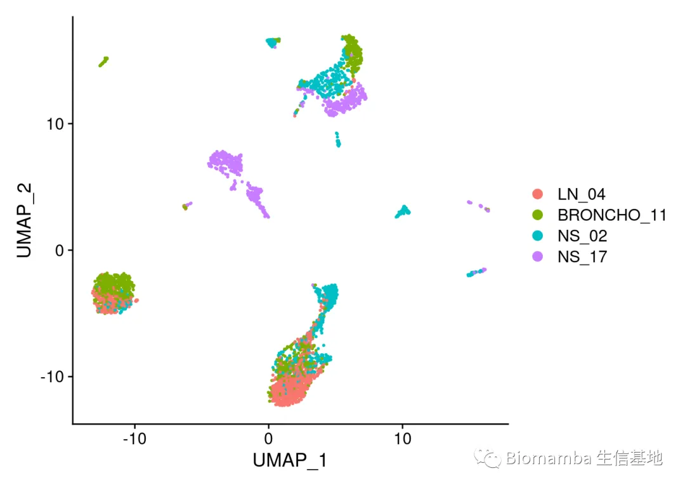
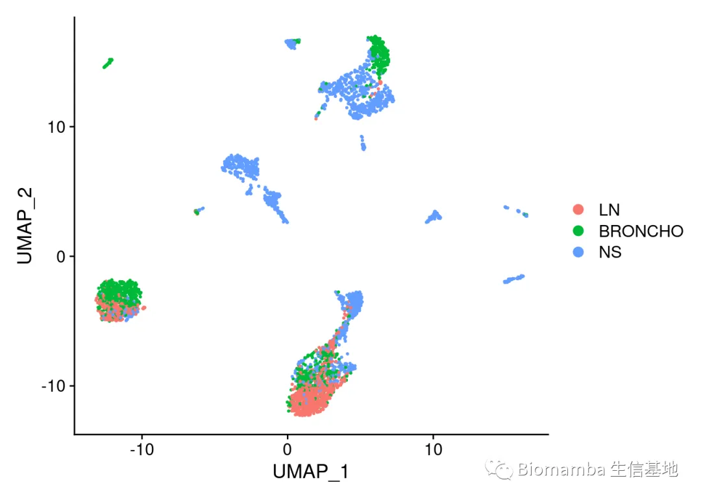
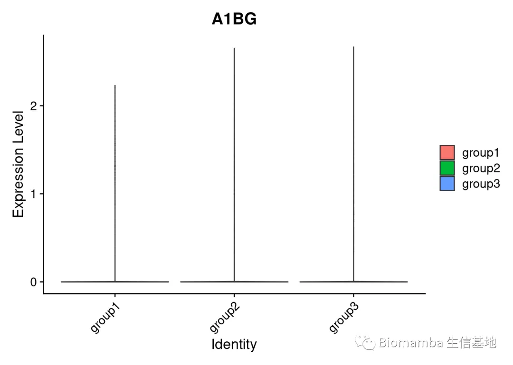

答读者问 （十四）Seurat中分类变量处理技巧
原文：https://mp.weixin.qq.com/s?__biz=MzAwMzIzOTk5OQ==&mid=2247486134&idx=1&sn=e581b8ac20bbc968aeef3f9cf56f3a0f&chksm=9b3f73e6ac48faf0f1c81752b0190abc617eb720a71806950e7851c7d19b7e3e092aa97bd005#rd 合集：单细胞教程全收录 / 答读者问
往期回顾
答读者问 （五）如何实现各物种基因的ID/symbol的转换
答读者问 （十一）如何一次性读取一个目录下的cellranger输出文件？
答读者问 （十二）ERROR: have no zero exit status 答读者问 （十三）查看Seurat对象时的ERROR：type='text'
问题
最近总是有粉丝提问第四讲中的分组标签是如何加入的，或者是询问如何将作者提供的注释信息加到Seurat对象之中，亦或是希望从cell barcode中拆分出自己需要的变量。
遇到这些问题，主要因为大家在用Seurat进行数据分析时，下载到的经常是作者处理好的过程文件，这时细胞名称或meta.data中存在的变量可能会带上一些用户不需要的信息，为了将这些信息进行整理归纳，我们需要用到idents的管理以及字符串处理的小技巧。
在将此前的课程理解透之后，大家是能自己想出这些问题的解决方案的，不过既然问的同学比较多，我们就专门出个教程浅谈一下怎么处理ident和metadata。
老规矩，以后的视频都在西柚云里制作，大家可以申请免费的跟着学：给你们申请到了免费的128GB云服务器
怎么解决问题
视频教程，可以下载文末给大家准备好的文件跟着视频操作：
https://www.bilibili.com/video/BV1S44y1b76Z?p=9
这是一个来自于GSE131907 的肺癌数据集，大约有二十多万个细胞，为了演示方便，我们初步的处理一下这个数据。
#首先先处理一下原始文件
# mycount <- readRDS('raw/raw.count.rds')#作者提供的矩阵
# myannta <- read.table('raw/cell.annotation.txt',row.names = 1,sep = '\t',header = T)#作者提供的注释信息
# library(Seurat)
# scRNA <- CreateSeuratObject(counts = mycount, project = "scRNA3k",
# min.cells = 3, min.features = 200)
# scRNA <- AddMetaData(scRNA,metadata = myannta)#把metadata添加到Seurat对象之中
# unique(scRNA$Sample)
# # [1] "LN_05" "NS_13" "LUNG_N18" "LN_04" "LUNG_N30"
# # [6] "LUNG_T09" "LUNG_T34" "LUNG_T18" "NS_04" "EFFUSION_06"
# # [11] "LUNG_N31" "LUNG_N20" "LUNG_N08" "NS_19" "BRONCHO_11"
# # [16] "BRONCHO_58" "LUNG_T25" "EFFUSION_12" "LUNG_T31" "LUNG_N06"
# # [21] "NS_17" "LUNG_N34" "NS_02" "LN_12" "EBUS_28"
# # [26] "EFFUSION_64" "LUNG_T28" "NS_16" "LUNG_T06" "LN_07"
# # [31] "LUNG_T19" "LUNG_T30" "EBUS_10" "LUNG_N09" "EBUS_49"
# # [36] "LN_03" "NS_07" "LN_06" "EBUS_19" "LN_08"
# # [41] "LUNG_T08" "LUNG_T20" "EBUS_51" "LUNG_N19" "LUNG_N01"
# # [46] "EFFUSION_13" "LN_01" "LN_11" "EBUS_12" "LN_02"
# # [51] "LUNG_N28" "EBUS_15" "EBUS_13" "NS_12" "NS_06"
# # [56] "NS_03" "EFFUSION_11" "EBUS_06"
# Idents(scRNA) <- 'Sample' #设置active idents
# scRNA <- subset(scRNA, downsample = 1000)#每个样本取一千个细胞
# table(scRNA$Sample)#每个样本都是一千个细胞，没问题
# # BRONCHO_11 BRONCHO_58 EBUS_06 EBUS_10 EBUS_12 EBUS_13
# # 1000 1000 1000 1000 1000 1000
# # EBUS_15 EBUS_19 EBUS_28 EBUS_49 EBUS_51 EFFUSION_06
# # 1000 1000 1000 1000 1000 1000
# # EFFUSION_11 EFFUSION_12 EFFUSION_13 EFFUSION_64 LN_01 LN_02
# # 1000 1000 1000 1000 1000 1000
# # LN_03 LN_04 LN_05 LN_06 LN_07 LN_08
# # 1000 1000 1000 1000 1000 1000
# # LN_11 LN_12 LUNG_N01 LUNG_N06 LUNG_N08 LUNG_N09
# # 1000 1000 1000 1000 1000 1000
# # LUNG_N18 LUNG_N19 LUNG_N20 LUNG_N28 LUNG_N30 LUNG_N31
# # 1000 1000 1000 1000 1000 1000
# # LUNG_N34 LUNG_T06 LUNG_T08 LUNG_T09 LUNG_T18 LUNG_T19
# # 1000 1000 1000 1000 1000 1000
# # LUNG_T20 LUNG_T25 LUNG_T28 LUNG_T30 LUNG_T31 LUNG_T34
# # 1000 1000 1000 1000 1000 1000
# # NS_02 NS_03 NS_04 NS_06 NS_07 NS_12
# # 1000 1000 1000 1000 1000 1000
# # NS_13 NS_16 NS_17 NS_19
# # 1000 1000 1000 1000
# dir.create('myfile')
# saveRDS(scRNA@assays$RNA@counts,'myfile/my.count.rds')
# saveRDS(scRNA@meta.data,'myfile/my.meta.data.rds')
正式开始操作
library(Seurat)
## Attaching SeuratObject
mycount <- readRDS('myfile/my.count.rds')
mymeta <- readRDS('myfile/my.meta.data.rds')
scRNA <- CreateSeuratObject(counts = mycount, project = "scRNA3k",
min.cells = 3, min.features = 200)
scRNA <- AddMetaData(scRNA,metadata = mymeta)
rm(mycount,mymeta);gc()
## used (Mb) gc trigger (Mb) max used (Mb)
## Ncells 2700979 144.3 4860990 259.7 4860990 259.7
## Vcells 148424538 1132.4 537065306 4097.5 533117533 4067.4
head(scRNA@meta.data, 5) #可以用这个来查看metadata的前5行
## orig.ident nCount_RNA nFeature_RNA Barcode
## AAACCTGAGACATAAC_LN_04 scRNA3k 3880 948 AAACCTGAGACATAAC
## AAACCTGAGAGGTTGC_BRONCHO_11 scRNA3k 3857 1063 AAACCTGAGAGGTTGC
## AAACCTGAGATGTGTA_NS_17 scRNA3k 46435 6088 AAACCTGAGATGTGTA
## AAACCTGAGCAGACTG_NS_02 scRNA3k 7771 1755 AAACCTGAGCAGACTG
## AAACCTGAGCCAGGAT_EBUS_28 scRNA3k 4366 1760 AAACCTGAGCCAGGAT
## Sample Sample_Origin Cell_type
## AAACCTGAGACATAAC_LN_04 LN_04 nLN T lymphocytes
## AAACCTGAGAGGTTGC_BRONCHO_11 BRONCHO_11 mLN B lymphocytes
## AAACCTGAGATGTGTA_NS_17 NS_17 mBrain Epithelial cells
## AAACCTGAGCAGACTG_NS_02 NS_02 mBrain Myeloid cells
## AAACCTGAGCCAGGAT_EBUS_28 EBUS_28 tL/B Epithelial cells
## Cell_type.refined Cell_subtype
## AAACCTGAGACATAAC_LN_04 T/NK cells Naive CD4+ T
## AAACCTGAGAGGTTGC_BRONCHO_11 B lymphocytes Follicular B cells
## AAACCTGAGATGTGTA_NS_17 Epithelial cells Malignant cells
## AAACCTGAGCAGACTG_NS_02 Myeloid cells Monocytes
## AAACCTGAGCCAGGAT_EBUS_28 Epithelial cells Malignant cells
names(scRNA@meta.data)#查看metadata里存储了哪些信息
## [1] "orig.ident" "nCount_RNA" "nFeature_RNA"
## [4] "Barcode" "Sample" "Sample_Origin"
## [7] "Cell_type" "Cell_type.refined" "Cell_subtype"
Idents(scRNA) <- 'Sample'#把active ident调为Sample
unique(scRNA$Sample)
## [1] "LN_04" "BRONCHO_11" "NS_17" "NS_02" "EBUS_28"
## [6] "EFFUSION_64" "LUNG_T28" "NS_16" "LUNG_N34" "LUNG_T30"
## [11] "LUNG_T06" "LUNG_N09" "EFFUSION_06" "LUNG_N08" "LUNG_N18"
## [16] "LN_12" "LUNG_T08" "LUNG_T09" "LUNG_N30" "BRONCHO_58"
## [21] "NS_19" "LUNG_N01" "LN_01" "LUNG_N06" "LUNG_T20"
## [26] "LN_11" "LUNG_N19" "LN_07" "EBUS_49" "LUNG_N28"
## [31] "EBUS_15" "NS_07" "EFFUSION_12" "NS_12" "LN_02"
## [36] "EFFUSION_13" "LUNG_T25" "NS_06" "LUNG_N20" "LUNG_T19"
## [41] "EBUS_19" "LUNG_N31" "NS_04" "EFFUSION_11" "NS_13"
## [46] "LN_06" "LN_05" "LUNG_T34" "EBUS_51" "LUNG_T18"
## [51] "LN_08" "NS_03" "EBUS_12" "EBUS_06" "LN_03"
## [56] "LUNG_T31" "EBUS_13" "EBUS_10"
unique(scRNA@active.ident)
## [1] LN_04 BRONCHO_11 NS_17 NS_02 EBUS_28 EFFUSION_64
## [7] LUNG_T28 NS_16 LUNG_N34 LUNG_T30 LUNG_T06 LUNG_N09
## [13] EFFUSION_06 LUNG_N08 LUNG_N18 LN_12 LUNG_T08 LUNG_T09
## [19] LUNG_N30 BRONCHO_58 NS_19 LUNG_N01 LN_01 LUNG_N06
## [25] LUNG_T20 LN_11 LUNG_N19 LN_07 EBUS_49 LUNG_N28
## [31] EBUS_15 NS_07 EFFUSION_12 NS_12 LN_02 EFFUSION_13
## [37] LUNG_T25 NS_06 LUNG_N20 LUNG_T19 EBUS_19 LUNG_N31
## [43] NS_04 EFFUSION_11 NS_13 LN_06 LN_05 LUNG_T34
## [49] EBUS_51 LUNG_T18 LN_08 NS_03 EBUS_12 EBUS_06
## [55] LN_03 LUNG_T31 EBUS_13 EBUS_10
## 58 Levels: LN_04 BRONCHO_11 NS_17 NS_02 EBUS_28 EFFUSION_64 LUNG_T28 ... EBUS_10
scRNA <- subset(scRNA,idents = unique(scRNA$Sample)[1:4])
#还是觉得这个细胞数据太多，我们再取个子集
可以看看subset前后的变化，metadata里的变量都可以这样取子集
scRNA[["percent.mt"]] <- PercentageFeatureSet(scRNA, pattern = "^MT-")
#通过线粒体的序列数来对数据进行计算
VlnPlot(scRNA, features = c("nFeature_RNA", "nCount_RNA", "percent.mt"), ncol = 3)

scRNA <- subset(scRNA, subset = nFeature_RNA > 200 & nFeature_RNA < 5000 & percent.mt < 10)
#scRNA$
VlnPlot(scRNA, features = c("nFeature_RNA", "nCount_RNA", "percent.mt"), ncol = 3)

做一些单样本分析中提过的计算，用于可视化
suppressWarnings(suppressMessages({
scRNA <- NormalizeData(scRNA,
normalization.method = "LogNormalize",
scale.factor = 10000)
scRNA <- FindVariableFeatures(scRNA, selection.method = "vst", nfeatures = 2000)
scRNA <- ScaleData(scRNA, features = rownames(scRNA)) #将数据进行标准化，为后续的PCA分析做准备，数据存在scRNA[["RNA"]]@scale.data
scRNA <- ScaleData(scRNA, vars.to.regress = "percent.mt") #剔除不想要的变量（如线粒体的比例）
scRNA <- RunPCA(scRNA, features = VariableFeatures(object = scRNA)) #PCA降维分析
scRNA <- FindNeighbors(scRNA, dims = 1:20)
scRNA <- RunUMAP(scRNA, dims = 1:20) #运行UMAP算法
}))
DimPlot(scRNA,label = T)

下面这些，其实你看过这一讲，应当已经掌握了：
names(scRNA@meta.data)
## [1] "orig.ident" "nCount_RNA" "nFeature_RNA"
## [4] "Barcode" "Sample" "Sample_Origin"
## [7] "Cell_type" "Cell_type.refined" "Cell_subtype"
## [10] "percent.mt"
table(scRNA$Cell_type)
##
## B lymphocytes Epithelial cells Fibroblasts MAST cells
## 749 310 36 21
## Myeloid cells NK cells Oligodendrocytes T lymphocytes
## 841 210 54 1382
## Undetermined
## 5
Idents(scRNA) <- 'Cell_type'
Idents(scRNA) <- scRNA$Cell_type
DimPlot(scRNA,label = T)

scRNA$my.va <- scRNA$Sample
unique(scRNA$my.va)
## [1] "LN_04" "BRONCHO_11" "NS_02" "NS_17"
library(tidyverse)
## Registered S3 method overwritten by 'cli':
## method from
## print.boxx spatstat.geom
## ── Attaching packages ─────────────────────────────────────── tidyverse 1.3.1 ──
## ✓ ggplot2 3.3.5 ✓ purrr 0.3.4
## ✓ tibble 3.1.6 ✓ dplyr 1.0.7
## ✓ tidyr 1.1.4 ✓ stringr 1.4.0
## ✓ readr 2.1.0 ✓ forcats 0.5.1
## ── Conflicts ────────────────────────────────────────── tidyverse_conflicts() ──
## x dplyr::filter() masks stats::filter()
## x dplyr::lag() masks stats::lag()
Idents(scRNA) <-'Sample'
DimPlot(scRNA)

scRNA$my.va <- recode(scRNA$my.va,
'LN_04'='LN',
"BRONCHO_11"="BRONCHO",
"NS_02"="NS",
"NS_17"="NS"
)
Idents(scRNA) <- 'my.va'
DimPlot(scRNA)

colnames(scRNA)[1:10]
## [1] "AAACCTGAGACATAAC_LN_04" "AAACCTGAGAGGTTGC_BRONCHO_11"
## [3] "AAACCTGAGCAGACTG_NS_02" "AAACCTGCATTACCTT_BRONCHO_11"
## [5] "AAACCTGCATTGAGCT_BRONCHO_11" "AAACCTGGTAGCGCTC_BRONCHO_11"
## [7] "AAACCTGGTGTAATGA_NS_02" "AAACCTGTCCACGCAG_BRONCHO_11"
## [9] "AAACCTGTCTTTAGTC_NS_02" "AAACGGGAGAGTAATC_LN_04"
mygroup <- c()
for (i in 1:ncol(scRNA)) {
mygroup[i] <- strsplit(colnames(scRNA)[i],'_')[[1]][2]
}
scRNA$Group <- mygroup
unique(scRNA$Group)
## [1] "LN" "BRONCHO" "NS"
Idents(scRNA) <- 'Group'
DimPlot(scRNA)
names(scRNA@meta.data)
## [1] "orig.ident" "nCount_RNA" "nFeature_RNA"
## [4] "Barcode" "Sample" "Sample_Origin"
## [7] "Cell_type" "Cell_type.refined" "Cell_subtype"
## [10] "percent.mt" "my.va" "Group"
myscRNA.list <- SplitObject(scRNA,split.by = 'Group')
LN <- myscRNA.list[[1]]
BRONCHO <- myscRNA.list[[2]]
NS <- myscRNA.list[[3]]
class(LN)
## [1] "Seurat"
## attr(,"package")
## [1] "SeuratObject"
LN[['group']] <- 'group1'
BRONCHO[['group']] <- 'group2'
NS[['group']] <- 'group3'
pbmc <- merge(x=LN,y=c(BRONCHO,NS))
unique(pbmc$group)
## [1] "group1" "group2" "group3"
Idents(pbmc) <- 'group'
VlnPlot(pbmc,features = rownames(pbmc)[1],pt.size = 0)

版本信息如下，没有申请到西柚云的小伙伴可以把自己的R包都安装成跟我一样的
sessionInfo()
## R version 4.1.2 (2021-11-01)
## Platform: x86_64-pc-linux-gnu (64-bit)
## Running under: Ubuntu 20.04.3 LTS
##
## Matrix products: default
## BLAS: /usr/lib/x86_64-linux-gnu/blas/libblas.so.3.9.0
## LAPACK: /usr/lib/x86_64-linux-gnu/lapack/liblapack.so.3.9.0
##
## locale:
## [1] LC_CTYPE=en_US.UTF-8 LC_NUMERIC=C
## [3] LC_TIME=en_US.UTF-8 LC_COLLATE=en_US.UTF-8
## [5] LC_MONETARY=en_US.UTF-8 LC_MESSAGES=en_US.UTF-8
## [7] LC_PAPER=en_US.UTF-8 LC_NAME=C
## [9] LC_ADDRESS=C LC_TELEPHONE=C
## [11] LC_MEASUREMENT=en_US.UTF-8 LC_IDENTIFICATION=C
##
## attached base packages:
## [1] stats graphics grDevices utils datasets methods base
##
## other attached packages:
## [1] forcats_0.5.1 stringr_1.4.0 dplyr_1.0.7 purrr_0.3.4
## [5] readr_2.1.0 tidyr_1.1.4 tibble_3.1.6 ggplot2_3.3.5
## [9] tidyverse_1.3.1 SeuratObject_4.0.3 Seurat_4.0.5
##
## loaded via a namespace (and not attached):
## [1] Rtsne_0.15 colorspace_2.0-2 deldir_1.0-6
## [4] ellipsis_0.3.2 ggridges_0.5.3 fs_1.5.0
## [7] rstudioapi_0.13 spatstat.data_2.1-0 farver_2.1.0
## [10] leiden_0.3.9 listenv_0.8.0 ggrepel_0.9.1
## [13] lubridate_1.8.0 RSpectra_0.16-0 fansi_1.0.2
## [16] xml2_1.3.3 codetools_0.2-18 splines_4.1.2
## [19] knitr_1.37 polyclip_1.10-0 jsonlite_1.7.3
## [22] broom_0.7.11 ica_1.0-2 dbplyr_2.1.1
## [25] cluster_2.1.2 png_0.1-7 uwot_0.1.10
## [28] shiny_1.7.1 sctransform_0.3.2 spatstat.sparse_2.0-0
## [31] compiler_4.1.2 httr_1.4.2 backports_1.4.1
## [34] assertthat_0.2.1 Matrix_1.4-0 fastmap_1.1.0
## [37] lazyeval_0.2.2 cli_3.1.1 later_1.3.0
## [40] htmltools_0.5.2 tools_4.1.2 igraph_1.2.8
## [43] gtable_0.3.0 glue_1.6.0 RANN_2.6.1
## [46] reshape2_1.4.4 Rcpp_1.0.8 scattermore_0.7
## [49] cellranger_1.1.0 jquerylib_0.1.4 vctrs_0.3.8
## [52] nlme_3.1-155 lmtest_0.9-39 xfun_0.29
## [55] globals_0.14.0 rvest_1.0.2 mime_0.12
## [58] miniUI_0.1.1.1 lifecycle_1.0.1 irlba_2.3.3
## [61] goftest_1.2-3 future_1.23.0 MASS_7.3-54
## [64] zoo_1.8-9 scales_1.1.1 spatstat.core_2.3-1
## [67] hms_1.1.1 promises_1.2.0.1 spatstat.utils_2.2-0
## [70] parallel_4.1.2 RColorBrewer_1.1-2 yaml_2.2.1
## [73] reticulate_1.22 pbapply_1.5-0 gridExtra_2.3
## [76] sass_0.4.0 rpart_4.1-15 stringi_1.7.6
## [79] highr_0.9 rlang_0.4.12 pkgconfig_2.0.3
## [82] matrixStats_0.61.0 evaluate_0.14 lattice_0.20-45
## [85] ROCR_1.0-11 tensor_1.5 labeling_0.4.2
## [88] patchwork_1.1.1 htmlwidgets_1.5.4 cowplot_1.1.1
## [91] tidyselect_1.1.1 parallelly_1.30.0 RcppAnnoy_0.0.19
## [94] plyr_1.8.6 magrittr_2.0.1 R6_2.5.1
## [97] generics_0.1.1 DBI_1.1.1 haven_2.4.3
## [100] pillar_1.6.4 withr_2.4.3 mgcv_1.8-38
## [103] fitdistrplus_1.1-6 survival_3.2-13 abind_1.4-5
## [106] future.apply_1.8.1 modelr_0.1.8 crayon_1.4.2
## [109] KernSmooth_2.23-20 utf8_1.2.2 spatstat.geom_2.3-0
## [112] plotly_4.10.0 tzdb_0.2.0 rmarkdown_2.11
## [115] readxl_1.3.1 grid_4.1.2 data.table_1.14.2
## [118] reprex_2.0.1 digest_0.6.29 xtable_1.8-4
## [121] httpuv_1.6.3 munsell_0.5.0 viridisLite_0.4.0
## [124] bslib_0.3.1
代码及测试文件
链接：https://pan.baidu.com/s/15sTdyg4YQTEnyQlIk7FegQ?pwd=lkjn
提取码：lkjn


如何联系我们
 最近发现后台中有一些消息我没能及时看到并答复，微信后台中超过48h后便不允许回复读者消息，这里还是再给大家留一下答疑的扣扣号，方便大家随时交流。微信号可以点击喜欢作者 后自动回复里有。欢迎大家向我咨询或者提供建议。大家可以阅读完这几篇之后添加我：如何搜索公众号过往发布内容
答疑公约
笑一笑也就算了
最近发现后台中有一些消息我没能及时看到并答复，微信后台中超过48h后便不允许回复读者消息，这里还是再给大家留一下答疑的扣扣号，方便大家随时交流。微信号可以点击喜欢作者 后自动回复里有。欢迎大家向我咨询或者提供建议。大家可以阅读完这几篇之后添加我：如何搜索公众号过往发布内容
答疑公约
笑一笑也就算了